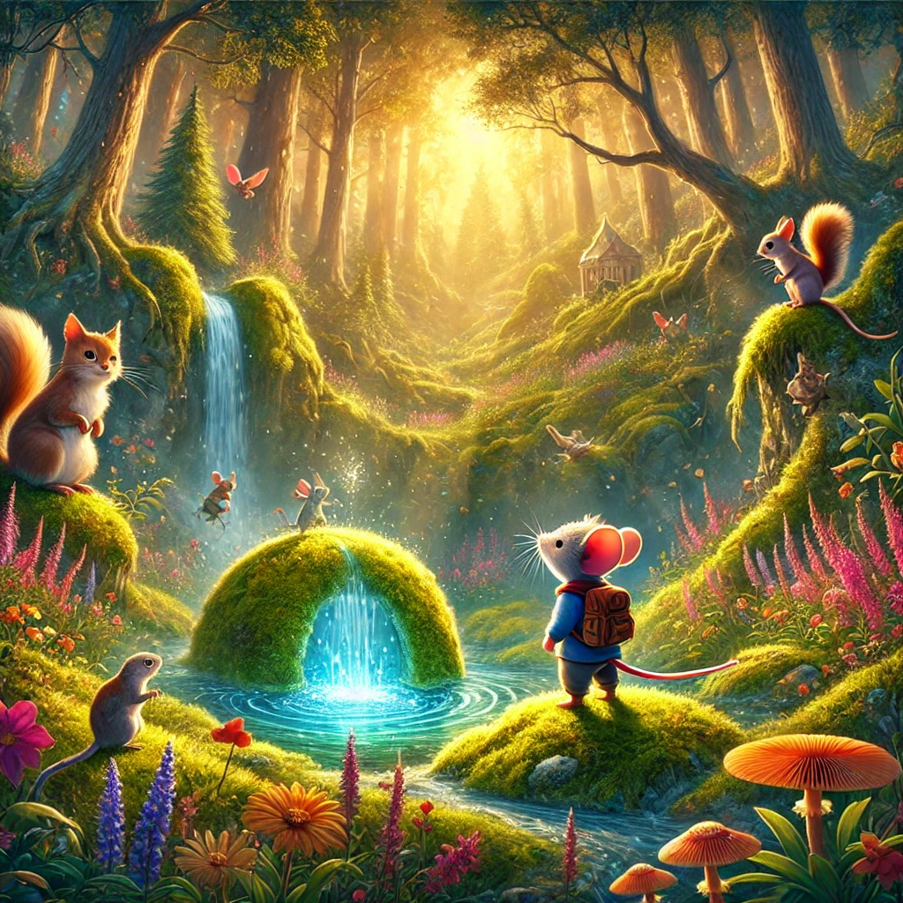

Un Ratón Llamado Riton

Había una vez, en un pequeño pueblo rodeado de colinas y bosques, un ratón llamado Riton. Riton era un ratón muy especial porque tenía un gran corazón y un espíritu aventurero. Mientras los otros ratones se conformaban con su vida tranquila en el campo, Riton soñaba con descubrir lugares nuevos y vivir grandes aventuras.
Un día, mientras exploraba los alrededores de su casa, Riton encontró un mapa antiguo escondido en una vieja caja de madera. El mapa mostraba el camino hacia un lugar misterioso llamado el Valle de los Susurros. Intrigado y emocionado, Riton decidió seguir el mapa y descubrir los secretos del valle.
Con su mochila llena de provisiones y su espíritu valiente, Riton se adentró en el bosque. Caminó durante horas, cruzando arroyos y trepando colinas, hasta que llegó a la entrada de un sendero escondido. Siguiendo el mapa, Riton avanzó por el sendero hasta que el bosque se abrió en un hermoso valle.
El Valle de los Susurros era un lugar mágico, lleno de flores brillantes, árboles altos y un suave susurro que parecía provenir de todas partes. Riton siguió el sonido y encontró un claro donde una fuente de agua cristalina brotaba de una roca cubierta de musgo. Al acercarse, escuchó una voz suave y melodiosa que le hablaba.
"Bienvenido, Riton," dijo la voz. "Soy el Espíritu del Valle, y has sido elegido para proteger este lugar mágico. Aquí, todos los seres viven en armonía y paz, pero necesitamos tu valentía y tu corazón puro para mantenerlo así."
Riton, sorprendido y honrado, aceptó su nueva misión con entusiasmo. Durante su tiempo en el valle, hizo muchos amigos entre las criaturas del bosque: un sabio búho que le enseñó sobre la naturaleza, una familia de ardillas que le mostró cómo recolectar frutos y un zorro astuto que le enseñó a ser sigiloso y rápido.
Juntos, vivieron muchas aventuras, protegiendo el valle de peligros y asegurándose de que todos vivieran en paz y felicidad. Riton descubrió que su verdadero hogar estaba en el Valle de los Susurros y que su lugar era ser un guardián y protector de la magia y la naturaleza.
Con el tiempo, Riton se convirtió en una leyenda entre los animales del bosque, conocido por su valentía y su gran corazón. Y así, el pequeño ratón que soñaba con aventuras encontró su verdadero propósito y vivió feliz, cuidando del Valle de los Susurros y de todos sus habitantes.
Y colorín colorado, este cuento se ha acabado. Buenas noches, Alondra. ¡Dulces sueños!